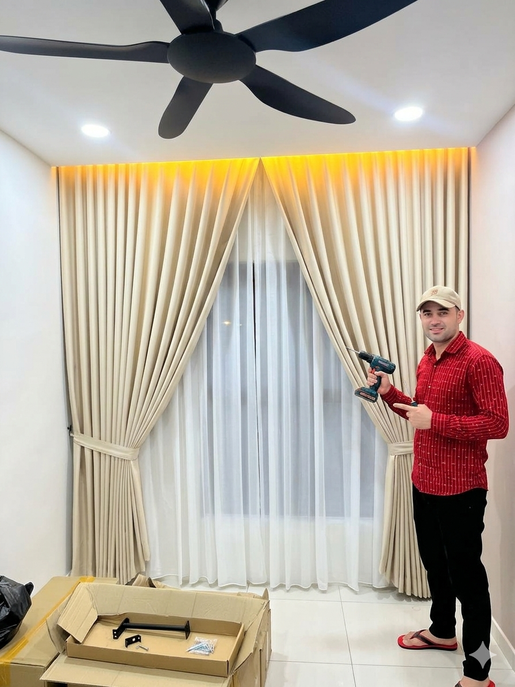
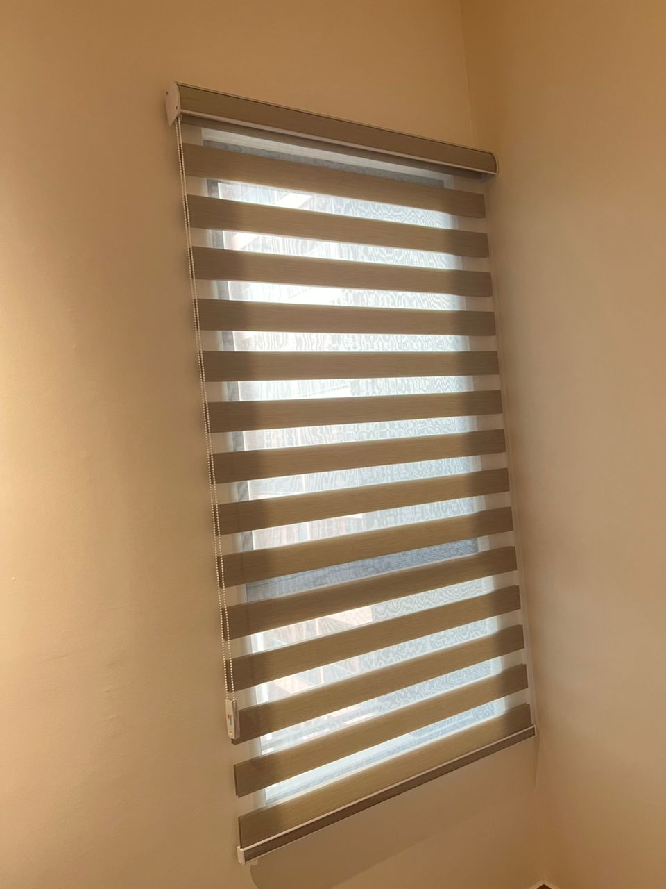
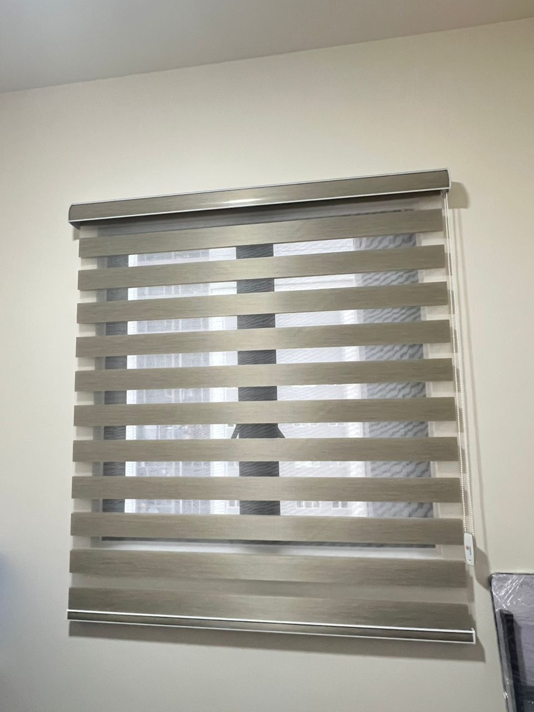
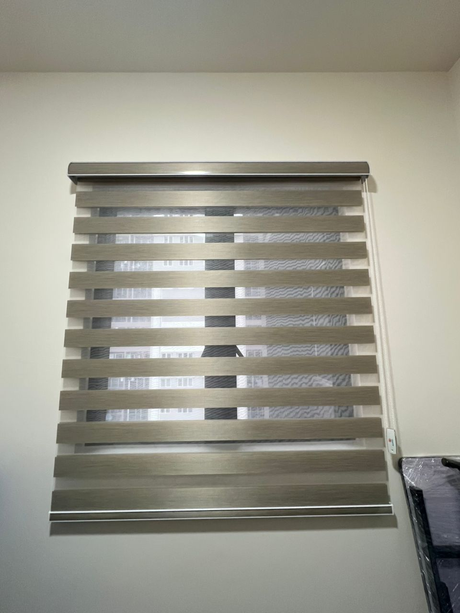
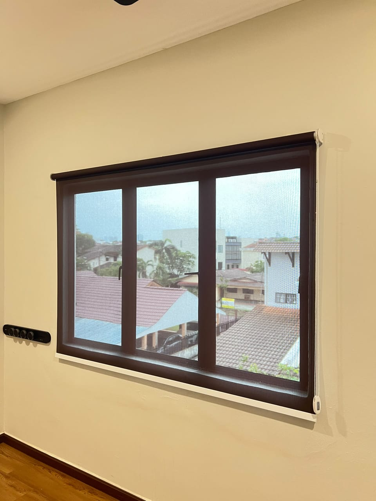

Custom S-Fold Curtains
Elegant wave-style curtains designed for modern living rooms and master bedrooms in KL.
Get Free QuoteDirect Factory Prices • Free On-Site Measurement Visit • Professional Curtain Installation Services
Premium custom-made wave curtains, zebra blinds, and office window shades tailored for homes, condos, and commercial offices across Klang Valley.

Elegant wave-style curtains designed for modern living rooms and master bedrooms in KL.
Get Free Quote
Dual-layer zebra blinds providing perfect daylight adjustment and privacy control.
Ask For Price
Blocks harsh tropical heat and sunlight completely, keeping bedrooms dark and cool.
Book Measurement
Combines elegant day sheer curtains with heavy blackout drapes for modern homes.
Get Free Quote
Clean and classic pleated curtain designs suitable for bedrooms and apartment windows.
Ask For Price
Durable roller, vertical, and Venetian blinds for corporate offices and shop lots in KL.
Request QuoteConfirm your measurements with our team before making any deposit or payment.

Scan using Touch 'n Go eWallet or any Malaysian mobile online banking app after quotation confirmation.
Common questions regarding our custom curtain manufacturing, measurement visits, and installation in Klang Valley.
We proudly supply and install custom curtains in Kuala Lumpur, Petaling Jaya, Subang Jaya, Shah Alam, Cheras, Puchong, Damansara, Ampang, and nearby Klang Valley regions.